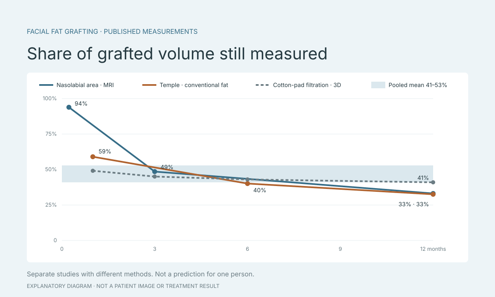

เติมไขมันหน้า อยู่ได้กี่เปอร์เซ็นต์? อัตราไขมันคงอยู่จากงานวิจัย
“เติมไขมันหน้า อยู่ได้กี่เปอร์เซ็นต์” ตอบได้เป็นช่วง ไม่ใช่ตัวเลขเดียว ไขมันที่ย้ายจากส่วนอื่นของร่างกายมาเติมที่ใบหน้ามีบางส่วนที่ไม่คงอยู่ งานวิจัยจึงวัดว่าเหลือเท่าไรเมื่อเทียบกับปริมาตรที่เติม บทความนี้รวบรวมตัวเลขจากงานวิจัยแยกตามภาพรวม วิธีเตรียมไขมัน ตำแหน่ง และเวลา เพื่อช่วยเตรียมคำถามก่อนพบแพทย์ ไม่ใช่คำแนะนำว่าควรเติมเท่าไร
ประเด็นสำคัญ
- ค่าเฉลี่ยจากงานทบทวน 27 การศึกษาคือ 47% แต่แต่ละงานอยู่ระหว่าง 26–83%
- วิธีเตรียมไขมัน ตำแหน่ง และเวลาที่วัด เปลี่ยนตัวเลขได้มาก
- ช่วงแรกหลังเติมดูมากกว่าผลระยะยาว และน้ำหนักตัวมีผลกับสิ่งที่เห็น
ภาพรวม: ค่าเฉลี่ยราว 47% แต่แต่ละงานต่างกันมาก
งานทบทวนอย่างเป็นระบบของ Lv และคณะ (ตีพิมพ์ 2021) รวม 27 การศึกษา ผู้ป่วย 1,011 คน พบอัตราการคงอยู่ที่วัดด้วยเครื่องมือเฉลี่ย 47% (ช่วงความเชื่อมั่น 95% คือ 41–53%) แต่ค่าของแต่ละการศึกษาอยู่ระหว่าง 26% ถึง 83% ติดตามผลเฉลี่ยตั้งแต่ 3 ถึง 24 เดือน และวิธีวัดมีผลต่อตัวเลขอย่างชัดเจน
ช่วง 41–53% บอกความไม่แน่นอนของค่าเฉลี่ย ไม่ใช่ช่วงที่คนหนึ่งจะได้ ถ้าคิดแบบเส้นตรง ไขมัน 1 มิลลิลิตรที่เติมจะเหลือราว 0.47 มิลลิลิตรตามค่าเฉลี่ยนี้ แต่ไม่ได้บอกว่าผิวจะนูนกี่มิลลิเมตร และผลของแต่ละคนอาจห่างจากค่าเฉลี่ยมาก

วิธีเตรียมไขมันเปลี่ยนตัวเลข
Wu และคณะ (2018) สุ่มผู้ป่วยใบหน้าไม่สมมาตร 63 คนเป็นสามกลุ่ม กลุ่มละ 21 คน ตามวิธีเตรียมไขมัน ติดตามได้ครบ 30 คน ภาพ 3D ที่เดือนที่ 1, 3, 6 และ 12 พบปริมาตรคงอยู่เฉลี่ย 49, 45, 43 และ 41% เมื่อกรองด้วยแผ่นฝ้าย 41, 38, 36 และ 34% เมื่อปั่นเหวี่ยง และ 37, 34, 31 และ 31% เมื่อปล่อยให้ตกตะกอน
ผู้เข้าร่วมงานนี้เป็นกลุ่มอายุน้อยที่รักษาความไม่สมมาตร และติดตามได้ไม่ครบทุกคน ตัวเลขจึงใช้เทียบวิธีเตรียมภายในงานนี้ ไม่ใช่ค่าที่ใช้ได้กับทุกตำแหน่งบนใบหน้า สิ่งที่ควรถามคือคลินิกเตรียมไขมันด้วยวิธีใด
แยกตามตำแหน่ง: แก้ม ขมับ และหน้าผาก
แก้มและกลางใบหน้า: Meier และคณะติดตามผู้ป่วย 33 คน (66 ข้าง) เฉลี่ย 16 เดือน เติมเฉลี่ย 10.1 มิลลิลิตรต่อข้าง วัดปริมาตรที่เพิ่มขึ้นได้ 3.3 มิลลิลิตร อัตราคงอยู่เฉลี่ย 31.8% ส่วน Gerth และคณะ ในผู้หญิง 26 คน (52 ข้าง) ติดตามเฉลี่ย 17 เดือน เติม 8.88 มิลลิลิตร วัดได้ 3.71 มิลลิลิตร คิดเป็น 41.2%
ขมับ: Zhang และคณะ พบไขมันแบบดั้งเดิมคงอยู่ 58.9% ที่ 1 เดือน 39.9% ที่ 6 เดือน และ 32.6% ที่ 12 เดือน ส่วนไขมันที่เตรียมแบบ SVF-gel คือ 65.4, 50.4 และ 41.2% งานของ Huang และคณะ รายงาน 65.7% แต่ผู้ป่วยเติมเฉลี่ย 1.5 ครั้ง จึงเทียบกับการเติมครั้งเดียวไม่ได้ หน้าผาก: ใน 17 คนที่วัดด้วย 3D ได้ ไขมันคงอยู่ 46.71% เมื่อได้รับโบท็อกซ์ร่วม และ 39.12% เมื่อไม่ได้รับ แต่การให้โบท็อกซ์ไม่ได้สุ่ม จึงสรุปไม่ได้ว่าโบท็อกซ์ทำให้ไขมันอยู่ได้มากขึ้น
อ้างอิง:
- Meier et al. (2009): long-term volume retention of midface fat grafting — Archives of Facial Plastic Surgery
- Gerth et al. (2014): midface fat graft volume with 3D imaging — Aesthetic Surgery Journal
- Zhang et al. (2022): SVF-gel and Coleman fat in the temple, 3D laser scanning — Frontiers in Surgery
- Huang et al. (2018): fat grafting to the temple, 96 patients — JAMA Facial Plastic Surgery
- Forehead fat grafting with and without botulinum toxin, 3D volumetric analysis (2019)
เวลาและน้ำหนักตัว
Liao และคณะใช้ MRI วัดไขมันที่เติมบริเวณร่องแก้มโดยตรง พบคงอยู่ 94.1% ที่ 7 วัน 48.7% ที่ 3 เดือน และ 33.1% ที่ 1 ปี สิ่งที่เห็นช่วงแรกจึงมากกว่าผลระยะยาว และงานต่าง ๆ ยังเห็นไม่ตรงกันว่าปริมาตรเริ่มคงที่เมื่อไร
งานติดตาม 5 ปีในผู้ป่วย 12 คนพบว่าปริมาตรใบหน้าที่เห็นสัมพันธ์กับน้ำหนักตัวที่เพิ่มขึ้น ขณะที่ปริมาตรที่เติมไม่สัมพันธ์อย่างมีนัยสำคัญ งานนี้เล็กเกินกว่าจะใช้เป็นสูตร แต่เป็นเหตุผลที่ควรบันทึกน้ำหนักตัวทั้งก่อนเติมและตอนติดตามผล
วิธีวัด และตัวเลขของคางกับปาก
ภาพสแกน 3D วัดรูปร่างผิวที่เปลี่ยนไป ส่วน MRI หรือ CT วัดเนื้อเยื่อไขมันใต้ผิว ตัวเลขสองแบบนี้ไม่ควรนำมาเทียบกันตรง ๆ งานของ Lobato และคณะ ในผู้ป่วยเติมคาง 40 คน พบว่าปริมาตรสัมบูรณ์จาก CT กับจากภาพถ่ายมือถือต่างกัน แต่ปริมาตรที่เปลี่ยนจากก่อนรักษาถึง 6 เดือนไม่ต่างกันอย่างมีนัยสำคัญ
Basile และ Basile ศึกษาการเติมคางใน 42 คน รายงานคางยื่นเพิ่มเฉลี่ย 8.9 มิลลิเมตรที่ 4 สัปดาห์ และ 7 มิลลิเมตรที่ 6 เดือน (ช่วง 3–11 มิลลิเมตร) แต่ไม่ได้ให้ปริมาตรที่เติมพอจะคิดเป็นต่อ 1 cc สำหรับปาก งานในผู้ป่วย 40 คนที่ผ่าตัดยกริมฝีปากร่วม พบว่าปริมาตรที่เพิ่มจากไขมันเข้าใกล้ศูนย์ราว 22 เดือน แต่มีเพียง 3 คนที่ติดตามเกิน 18 เดือน จึงยังสรุปไม่ได้
อ้างอิง:
ไขมันกับฟิลเลอร์: ตัวเลขเทียบกันตรง ๆ ไม่ได้
การเติมไขมันเป็นหัตถการที่ต้องนำไขมันจากอีกตำแหน่งของร่างกาย ส่วนฟิลเลอร์เป็นเจลที่ฉีด ตัวเลข “เหลือกี่เปอร์เซ็นต์” ของไขมัน กับ “ปริมาตรที่วัดได้ต่อมิลลิลิตร” ของฟิลเลอร์มาจากงานคนละแบบ เวลาคนละช่วง และวิธีวัดคนละอย่าง
ถ้ากำลังเลือกระหว่างสองทาง ให้ถามแพทย์ถึงทางเลือกทั้งหมด รวมถึงการยังไม่ทำ ความเสี่ยงของแต่ละทาง การพักฟื้น และการติดตามผล
- คลินิกเตรียมไขมันด้วยวิธีใด
- ผลที่คาดหวังประเมินที่กี่เดือน
- ถ้าต้องเติมซ้ำ จะประเมินเมื่อไร
- น้ำหนักตัวที่เปลี่ยนมีผลกับสิ่งที่เห็นอย่างไร
คุยกับแพทย์ด้วยภาพบนใบหน้าของคุณเอง
ปริมาณ ตำแหน่ง และจำนวนครั้งที่เติม ต้องให้แพทย์ประเมินจากการตรวจจริง ตัวเลขในบทความนี้ใช้ทำความเข้าใจว่าทำไมผลจึงต่างกัน ไม่ใช่ใช้กำหนดปริมาณ
Faceliora Clinic ช่วยให้แพทย์จำลองการเติมไขมันบนโมเดล 3D ของใบหน้าผู้รับคำปรึกษาเอง โดยแสดงเพียงส่วนหนึ่งของปริมาตรที่เติม ใกล้เคียงค่าเฉลี่ยในงานวิจัย เพื่อใช้อธิบายระหว่างการปรึกษา ภาพที่ได้เป็นภาพจำลองเพื่อการสื่อสาร ไม่ใช่การรับประกันผลการรักษา
แหล่งข้อมูล
- Lv et al. (2021): fat graft retention in the face, systematic review and meta-analysis — Aesthetic Plastic Surgery
- Wu et al. (2018): fat processing methods and facial graft retention, randomized study — JAMA Facial Plastic Surgery
- Meier et al. (2009): long-term volume retention of midface fat grafting — Archives of Facial Plastic Surgery
- Gerth et al. (2014): midface fat graft volume with 3D imaging — Aesthetic Surgery Journal
- Zhang et al. (2022): SVF-gel and Coleman fat in the temple, 3D laser scanning — Frontiers in Surgery
- Huang et al. (2018): fat grafting to the temple, 96 patients — JAMA Facial Plastic Surgery
- Forehead fat grafting with and without botulinum toxin, 3D volumetric analysis (2019)
- Liao et al. (2022): nasolabial fat graft retention measured by MRI — Quantitative Imaging in Medicine and Surgery
- Facial fat grafting at five years with 3D surface imaging (2025) — JPRAS
- Basile and Basile: chin augmentation with fat, 42 patients — Plastic and Reconstructive Surgery
- Lobato et al. (2023): CT and smartphone photogrammetry after chin fat grafting — Aesthetic Surgery Journal
- Lip lift with and without fat grafting in facial feminization, 3D volumes (2026) — ASJ Open Forum